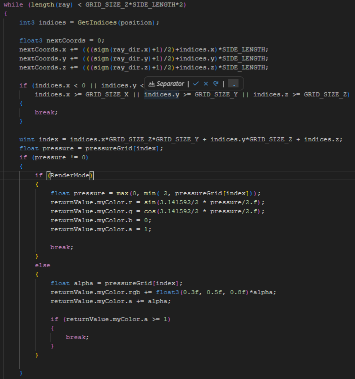
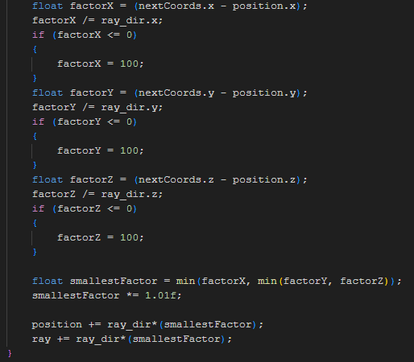

During 8 weeks starting in february I have been working at creating a Fluid Simulation based on a fixed grid. This has
involved learning a lot of new things in the effort to piece things together to a functioning program.
This project ended up becoming an interesting fusion of my interests in both the handling of virtual worlds as a series of Voxels,
and of my passion for science, and more specifically in this case, physics.
As such much of this may be a bit long winded and in depth about my thought process regarding how I approached things and the
physics I tried to make use of, I hope illustrative images help to make things easier to break down and understand.
Starting out I was inspired by videos from Sebastian Lague, he makes a variety
of different coding videos about how he creates different projects. I had both seen his videos about creating a fluid simulation based on particles,
and later his video on simulating smoke, this video made use of what to me seemed to be a more novel method of simulating fluids, namely, treating
the fluid as a fixed grid, where each cell contains fluid, and each edge between cells stores data about velocities.
This was incredibly fascinating to me, and combined with the fact that I've had a major interest in experimenting with voxels this really appealed to me.
As I started out I ended up basing my first iteration of the simulation on a
video about writing an Eulerian fluid simulation by Ten Minute Physics, this video made it surprisingly
easy to start out creating a working baseline 2d fluid simulation, admittedly it was a simulation of fluid in a fully enclosed space,
which wasn't the goal I had in mind, but it made for a great start.
This is the result of the 2d-Simulation, it works by solving for incompressibility first, using a basic implementation of
a red-black Gauss-Seidel algorithm, meaning we update cells at odd indices first, then we update cells at even indices, reducing
inconsistent behaviour where different parts of the grid behave inconsistently, and using overrelaxation to speed up how fast it
reaches equilibrium, I'll elaborate on this a little bit further down.
Then after solving that I advect the velocities in the grid by calculating the average velocity in the position which the edge
position would've come from, and setting the current velocity to that, I'll also elabortate on this right below.
Right below here are two videos, showing the Gauss-Seidel implementation, and the fluid advection in a step by step, it's not
as smooth since each step is triggered by the push of a button.
This is the Gauss-Seidel implementation I landed on, as you can see the velocities wiggle a bit as it progresses, this is a result
of the usage of overrelaxation, overrelaxation as far as I understand it simply means multiplying the output of a Gauss-Seidel step
by a number between 1 and 2, this has the effect of exagerating all the effects of the Gauss-Seidel, which causes the effects of the
velocity balancing to spread out through the grid quicker, instead of being stuck in one part for a long time.
This shows the advection of my fluid, let's consider a vertical edge for the sake of explaining how it works, this edge stores the
x-velocity between the two cells it borders, we calculate the average y-velocity of the closest 4 horizontal edges, which becomes the
y-velocity we will use, and we simply use the current x-velocity.
From here we subract the combined velocity multiplied by the frame time from the current position, which gets our previous position,
then from this position we calculate the average x-velocity of the closest 4 vertical edges, and this is what we use as the new velocity.
This solution ends up resulting in velocity decaying away, and in velocity advection for movement in diagonal directions spreadting out
the velocity more, but this seemed as a decent proof of concept, considering I was planning to move on to 3d.
My next step was to adapt this simulation to 3d, in order to do so I ended up having to do a bunch of work optimizing the simulation, one of the main issues was
overhauling the rendering. At the time I had been using a method of rendering which made use of build in functions in the engine provided by the school to draw lines
to represent the flow of fluid, and draw circles to represent whether the net flow into and out of a cell was positive, negative, or neutral. This was very slow to render,
and as such I had to overhaul this before moving to 3d, since 3d would greatly increase the number of cells and massively inscrease the number of edges.
As such I got to work writing a shader to render the 2d grid in 3d based on the amount of fluid present in each cell, I based the shader on one I made when experimenting
with rendering a voxel world, which was a .hlsl pixel shader which traced a ray from the origin pixel into the world until it reached a maximum distance.
I was able to adapt it relatively easily, changing the behaviour when a cell was collided with to add an amount of colour based on the fluid present in the cell,
since cells which weren't completely full to begin with would otherwise block vison to cells behind it, which would've caused the fluid to look really strange, either they
would've resulted in a transparent block which caused you to see through parts of the fluid which were meant to be full, or every cell which contained any fluid would've
appeared like a full block, potentially causing flickering when small amounts are pushed in and back out of cells.


This was the main loop of the resulting pixel shader, it simply iterates through, checking each cell in the grid one after the other, until it either has encountered enough
fluid to be fully coloured in, until it exits the grid, or until it has traveled for double the Z-length of the grid, which is mostly there to set an upper bound which
doesn't cut off a large portion of the grid from being visible.
Could probably rework it to check a certain number of cells instead, but it just doesn't seem like a relevant thing to focus on at the moment.
It also includes a seperate rendering mode implemented later on for showing the pressure at any given cell, so as to assist in debugging strange behaviour regarding pressure.
After every iteration we calculate in which direction the next cell we will reach is, and move our ray forwards towards that. We multiply the factor with 1.01 so as to ensure
that we don't accidentally end up at the border of a cell and calculate for the same cell again by simply stepping a little bit further forwards.
After implementing the new rendering system I got to work on trying to adapt the simulation to 3d more properly, and here I did end up encountering some issues. The
videos I had used as a reference were conclusively focused on fluid simulations within an enclosed area, where the whole thing was filled with the same fluid,
but since I was trying to create a simulation of a liquid more specifically this necessarily involved being able to simulate how it is affected by gravity, and thus
seeing it fall, and spread out once it hit solid ground.
This turned out to be a very different task compared to what I had done when following along with the videos, no longer could I seem to rely on simply enforcing
incompressibility and advecting the fluid around, so I, after much experimentation, came to the conclusion that I would have to overhaul the simulation to make use
of pressure and forces in order to make a somewhat convincing simulation.
At the time I didn't quite understand how much of an undertaking it would turn out to be, however, this ended up being what I worked on for the rest of the project.
Starting out this seemed like a fun and interesting challenge, I had learned a decent amount of physics during both my education in upper secondary school, and
during the time I spent at university. And while I hadn't learned much about the physics of fluids, this still seemed like a very interesting challenge which would
build on things I had learned and wasn't sure I'd be able to make use of.
In order to try to implement pressure I started to look for ways of calculating it, I was certainly aware of the classic method of measuring the pressure at a given
depth under water, but I was not sure how I'd be able to determine how much uninterupted fluid existed above any given point, as such I quickly started experimenting
with the bulk modulus, which is a property describing how a change in volume corresponds with a change in pressure, which then lead me to finding out about
compressibility.
This felt like a more easily applicable unit for measuring the change of pressure, and so I got to work experimenting, trying to implement compressibility in
conjunction with gravity, to try to simulate the incompressibility of the fluid. However after a few days I just couldn't seem to get this method working, and had
to come to the conclusion that it was unlikely to work out, making use of the compressibility of a fluid caused a lot of complications regarding fluid flowing into
empty cells, and out of ones which were previously filled.
This caused issues since compressibility requires a measuring of the change of volume, or density, of a substance, this means that it wasn't really possible to
calculate pressure in a cell which was previously empty, this wasn't in itself too bad, since an empty cell wouldn't be exerting a meaningful pressure
against neighboring cells which did contain fluid, so this wasn't too bad, but it meant I lacked a good baseline for pressure in cells, and the issue with
fluid leaving a cell complicated things a lot.
The formula for getting the change in pressure was a matter of multiplying the compressibility of the fluid with the change in density of the fluid divided by
the initial density before this change. This meant that as a cell got closer to getting empty, it was resulting in a massive negative pressure which made it
impossible for fluid to flow properly.
Having come to the conclusion that I would not be able to get that working I ended up turning back to a more classic calculation, and tried to implement a
method of calculating the pressure based on the force exerted upon a cell by nearby cells, I concluded that by calculating the net forces acting upon a cell
I could use that to calculate the pressure in it, since pressure is defined as Force/Area, so I got to work with trying to get that working.
After a decent amount of effort I arrived at a point of getting some surprisingly fluid movement from the simulation, it still struggled with pressures and
forces failing to calculate correctly, especially at the positive edges of the grid, and that's where my project is currently at, I am planning to continue
working on it whenever I have the time to, but I am very happy to have been able to create some form of fluid interactions in a 3d grid, even if it's a
lot less in depth than I had originally planned.